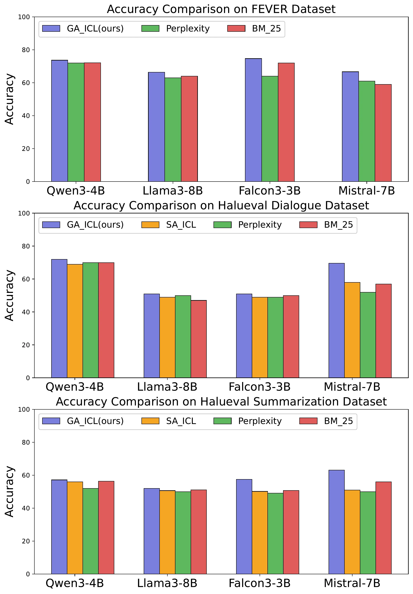
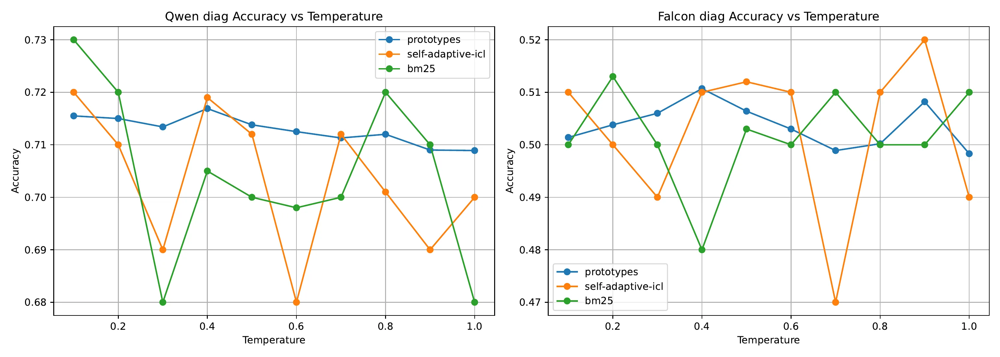

GA-ICL turns hallucination detection into a geometry problem. The system keeps the LLM frozen, learns a light retrieval geometry on top of its representations, and chooses demonstrations that better reveal factual consistency.
It upgrades in-context learning from plain similarity search to targeted example selection. The examples come from local manifold structure and class prototypes, so the prompt starts with better evidence.
Semantic similarity is only a rough proxy for factual consistency. GA-ICL learns a compressed space where hallucination-relevant distinctions are easier to separate. The strongest gains appear in dialogue and summarization, where factual errors depend on long context and a single lexical clue is too weak.
The idea is clean: the large model stays frozen, and a small retrieval module learns around it. For scientific applications, that means using the geometry already present inside frozen models and avoiding full LLM retraining for every new task.
This is the other half of the story told by DRIFT. GA-ICL changes what enters the prompt; DRIFT watches what happens during generation. One is selection, the other is routing.
On FEVER and HaluEval, GA-ICL beats standard ICL retrieval baselines in most tested settings. It stays stable under temperature perturbations and model changes, and extended tests on Phi-14B and Qwen3-32B show that the geometry scales to larger LLMs.
| Axis | Takeaway |
|---|---|
| Core method | Geometry-aware ICL demonstration selection |
| Model update | Frozen LLM, small retrieval module |
| Benchmarks | FEVER and HaluEval |
| Strongest tasks | Dialogue and summarization |
| Large-model checks | Phi-14B and Qwen3-32B |

Accuracy comparisons of GA-ICL against standard selection baselines.

Dialogue results show where geometry-aware demonstrations separate factual consistency most clearly.